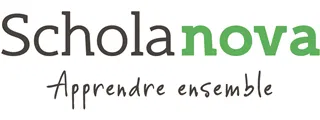

Kenny Ngos-Maroude
Étudiant en administration systèmes & réseaux, alternant à CGEFI (Ivry-sur-Seine). Windows Server, Linux, virtualisation et infrastructure réseau.
À propos
Je m'appelle Kenny Ngos-Maroude et je suis en deuxième année de BTS SIO option SISR au CFA Schola Nova, à Paris. Avant cela, j'ai préparé un bac professionnel Systèmes Numériques option RISC au lycée Saint-Nicolas.
Je suis en alternance au CGEFI à Ivry-sur-Seine en tant qu'assistant de proximité informatique, après deux stages techniques à la Mairie de Saint-Ouen et chez UpCoop. J'ai aussi monté des machines virtuelles sous Windows et Linux pour mes travaux pratiques.
En dehors de l'informatique, je pratique la musculation, le karting, les sports de combat et l'aviron, et j'aime le cinéma, les comics et les mangas.
Le BTS SIO
Le BTS SIO (Services informatiques aux organisations) est un diplôme d'État de niveau bac+2, préparé en deux ans. Il forme des techniciens supérieurs qui participent à la production et à la fourniture de services informatiques pour une organisation, une entreprise de services du numérique, un éditeur de logiciels ou une société de conseil.
Support et mise à disposition de services informatiques
Dans mon quotidien : traitement des tickets, préparation et déploiement des postes.
Administration des systèmes et des réseaux
Dans mes TP : serveurs DNS et DHCP, Windows Server, STP, LACP et HSRP.
Cybersécurité des services informatiques
Premières approches : risques liés au DNS (empoisonnement de cache, transferts de zone).
Mon rôle en entreprise
Depuis le 8 septembre 2025, j'occupe le poste d'assistant de proximité informatique en alternance au CGEFI, à Ivry-sur-Seine. Mes missions se répartissent en trois domaines.
Assistance aux utilisateurs
- Consultation et prise en charge des tickets de demandes d'assistance
Préparation et mise en place du matériel
- Préparation des ordinateurs et des téléphones
- Mastérisation des postes
- Création de clés USB bootables
- Aménagement de parc : raccordement de copieurs, stations d'accueil, doubles écrans
Inventaire et suivi
- Gestion de l'inventaire informatique
- Inventaire des disques durs pour évaluer leur obsolescence
Compétences
Projets
Serveur DNS interne — Projet "Eleven Hole Star"
- Mise en place d'un serveur DNS interne autoritaire sur la zone eleven-hole-star.internal, avec enregistrements A et PTR
- Configuration d'une zone inverse pour la résolution IP → nom
- Analyse du fonctionnement DNS avec l'outil dig (enregistrements A, MX, NS, PTR, SOA)
- Mise en place de forwarders (Cloudflare 1.1.1.1, Google 8.8.8.8) pour la résolution externe
- Centralisation des journaux DNS vers Graylog pour la supervision du réseau
- Étude des risques : empoisonnement de cache DNS (spoofing) et restriction des transferts de zone (AXFR) aux serveurs secondaires connus
Segmentation réseau & serveur DHCP
- Découpage d'un plan d'adressage 192.168.200.0 en deux sous-réseaux (50 et 30 machines) avec calcul des masques, adresses réseau et broadcast
- Création de deux segments LAN virtuels sous VMware et rattachement des VM à leur segment
- Installation et configuration du rôle DHCP sur Windows Server, avec une étendue par sous-réseau
- Vérification de l'attribution des adresses IP sur les postes clients de chaque segment
Déploiement d'un poste client Windows 10
- Création d'une VM sous VMware et installation de Windows 10 Professionnel 64 bits
- Configuration initiale du poste (nom de machine, compte administrateur, compte utilisateur local)
- Installation des logiciels de base : Avira, LibreOffice, Adobe Acrobat Reader, TeamViewer/AnyDesk
- Mise en place d'un volume RAID 1 (miroir) de 100 Go et formatage NTFS
- Structuration des dossiers partagés avec permissions différenciées (lecture seule / lecture-écriture) et tests de connexion utilisateur
Tableau de synthèse
Tableau de synthèse des réalisations professionnelles de l'épreuve E4 du BTS SIO. Chaque réalisation est rattachée aux compétences du référentiel qu'elle met en œuvre.
| Réalisation | Période | Patrimoine | Incidents | Présence en ligne | Mode projet | Service | Dév. pro |
|---|---|---|---|---|---|---|---|
| Réalisations en cours de formation | |||||||
| Déploiement d'un service DNS interne (BIND9 sous Debian) : zone directe et inverse, forwarders, centralisation des journaux dans Graylog.Document : B03 DNS ExplicationCompétences : Mettre à disposition des utilisateurs un service informatique | — | ||||||
| Segmentation du réseau en deux sous-réseaux et déploiement d'un service DHCP sous Windows Server (VMware).Document : TP DHCP Bloc 2Compétences : Mettre à disposition des utilisateurs un service informatique | — | ||||||
| Installation et configuration d'un poste client Windows 10 : RAID 1, logiciels, dossiers partagés et gestion des permissions.Document : Procédure Windows ClientCompétences : Gérer le patrimoine informatique · Mettre à disposition des utilisateurs un service informatique | — | ||||||
| Conception et mise en ligne de mon portfolio professionnel.Production : portfolioCompétences : Organiser son développement professionnel | — | ||||||
| Veille technologique sur les VPN : protocoles (WireGuard, OpenVPN, IPsec/IKEv2), cryptographie post-quantique et évolution vers le ZTNA.Production : section « Veille technologique » du portfolioCompétences : Organiser son développement professionnel | Nov. 2026 | ||||||
| Mise en place de la redondance des liens avec STP (Spanning Tree Protocol) pour éviter les boucles de commutation, simulée sous Cisco Packet Tracer.Compétences : Gérer le patrimoine informatique · Mettre à disposition des utilisateurs un service informatique | — | ||||||
| Agrégation de liens avec LACP : regroupement de liens physiques en un lien logique, simulée sous Cisco Packet Tracer.Compétences : Gérer le patrimoine informatique · Mettre à disposition des utilisateurs un service informatique | — | ||||||
| Haute disponibilité de la passerelle avec HSRP : passerelle virtuelle et bascule automatique entre routeurs, simulée sous Cisco Packet Tracer.Compétences : Gérer le patrimoine informatique · Mettre à disposition des utilisateurs un service informatique | — | ||||||
| Réalisations en milieu professionnel, première année | |||||||
| Préparation du matériel informatique (ordinateurs, téléphones) et mastérisation des postes.Compétences : Mettre à disposition des utilisateurs un service informatique | Depuis le 08/09/25 | ||||||
| Gestion de l'inventaire informatique : recensement du parc et inventaire des disques durs pour évaluer leur obsolescence.Compétences : Gérer le patrimoine informatique | Depuis le 08/09/25 | ||||||
| Réalisations en milieu professionnel, deuxième année | |||||||
| Création de clés USB bootables pour l'installation des postes.Compétences : Mettre à disposition des utilisateurs un service informatique | Depuis le 08/09/25 | ||||||
| Aménagement de parc informatique : raccordement de copieurs, installation de stations d'accueil et de doubles écrans.Compétences : Gérer le patrimoine informatique · Mettre à disposition des utilisateurs un service informatique | — | ||||||
| Consultation et prise en charge des tickets de demandes d'assistance.Compétences : Répondre aux incidents et aux demandes d'assistance et d'évolution | — | ||||||
compétence mise en œuvre. Survolez un intitulé de colonne pour lire la compétence complète.
Veille technologique : le VPN
Un VPN (réseau privé virtuel) crée un tunnel chiffré entre un poste ou un site et un réseau distant : c'est la brique de base de l'accès à distance et de l'interconnexion de sites. Comme futur technicien SISR, je suis son évolution sur trois axes : les protocoles, la cryptographie post-quantique et la remise en question du VPN par le modèle Zero Trust.
Veille actualisée en novembre 2026Dernières actualités
- 5 nov. 2026OpenVPN 2.7.9 corrige deux vulnérabilités propres à Windows (CVE-2026-121720 et CVE-2026-115342) : filtrage insuffisant des variables d'environnement transmises par le service, et analyse fragile des arguments de ligne de commande. Source
- 4 août 2026OpenVPN détaille sa feuille de route post-quantique : échange de clés hybride X25519 + ML-KEM-768, activé par défaut dans OpenSSL 3.5 (2025) ; la prise en charge dépend donc de la version d'OpenSSL de l'OS, et les profils de connexion existants doivent être régénérés. Article d'un éditeur, donc orienté vers ses produits. Source
- 16 juin 2026Check Point : faille critique CVE-2026-50751 (CVSS 9,3) sur les passerelles VPN d'accès distant. Quand IKEv1 reste actif, un attaquant non authentifié peut ouvrir une session VPN sans mot de passe valide. Exploitée depuis le 7 mai 2026, liée à un cas du rançongiciel Qilin. Mesure : appliquer le correctif ou désactiver IKEv1 au profit d'IKEv2. Source
- 1er juin 2026Palo Alto : CVE-2026-0257 dans GlobalProtect (PAN-OS), contournement d'authentification par faux cookies lorsque « authentication override » est activé. Exploitée depuis le 17 mai 2026 et inscrite au catalogue KEV de la CISA le 30 mai ; correctif à appliquer sans délai. Source
- mars 2026AmneziaWG 2.0 : variante de WireGuard qui ajoute de l'obfuscation pour rendre le trafic plus difficile à détecter et à bloquer en cas de censure ; chiffrement WireGuard inchangé. Source
- 15 janv. 2026Mullvad retire définitivement OpenVPN de ses serveurs au profit de WireGuard. Source
- 2026Proton VPN déconseille à son tour OpenVPN. Source
Les trois protocoles à connaître
| WireGuard | OpenVPN | IPsec / IKEv2 | |
|---|---|---|---|
| Taille du code | Environ 4 000 lignes : un cœur court, facile à auditer | Environ 100 000 lignes | Environ 600 000 lignes (implémentation strongSwan) |
| Points forts | Simple à configurer, très rapide, présent nativement sur Linux, Windows, macOS, iOS et Android | Très flexible : UDP ou TCP, port 443 pour passer les pare-feu stricts, nombreuses méthodes d'authentification | Stable, itinérance réseau (MOBIKE), interopérable entre constructeurs, standard des liaisons site à site |
| Limites | Pas de transport TCP ; fonctions de gestion des utilisateurs à ajouter via des outils tiers | Plus lourd et plus lent ; configuration plus longue | Configuration plus complexe, nombreux paramètres à faire correspondre des deux côtés |
| Cas d'usage | Nouveau tunnel entre deux serveurs Linux, petites équipes, home lab | Télétravailleurs, réseaux filtrés, authentification variée | Interconnexion de sites, mobiles, équipements pare-feu |
Les ordres de grandeur (taille du code, débits) viennent de comparatifs publiés en 2026 par des sites spécialisés ; ils varient selon la configuration et sont à prendre comme des tendances.
Ce que j'ai retenu de l'actualité
WireGuard devient la référence
Mullvad a retiré définitivement OpenVPN de ses serveurs le 15 janvier 2026, et Proton VPN encourage lui aussi ses utilisateurs à passer à WireGuard. WireGuard est le protocole par défaut de plusieurs produits comme Tailscale, NetBird ou Firezone. OpenVPN reste maintenu (branche 2.7) et garde son intérêt quand il faut passer en TCP.
Cryptographie post-quantique
Les algorithmes actuels (RSA, Diffie-Hellman, courbes elliptiques) seraient fragilisés par un ordinateur quantique. Le risque est d'enregistrer aujourd'hui des échanges pour les déchiffrer plus tard, d'où une migration déjà engagée. Les fournisseurs adoptent une approche hybride qui associe un algorithme classique à ML-KEM. Côté IPsec, les RFC 8784 (clés pré-partagées post-quantiques), 9242 et 9370 permettent de renforcer IKEv2.
Du VPN au ZTNA
Un VPN classique place l'utilisateur « sur le réseau », ce qui en fait une cible privilégiée : les passerelles VPN exposées et non mises à jour restent un point d'entrée courant pour les attaquants. Le ZTNA (Zero Trust Network Access) crée à la place des micro-tunnels vers des applications précises, après vérification de l'identité (MFA). Pour les PME, la transition se fait souvent par étapes, en commençant par l'accès distant.
Pourquoi c'est utile pour mon parcours
- Le VPN relève du bloc 2 (administration des systèmes et des réseaux) et du bloc 3 (cybersécurité) du BTS SIO SISR.
- Il complète mes TP réseau (DNS, DHCP, redondance STP, LACP et HSRP) : après la disponibilité des liens, la sécurisation des accès distants.
- Je retiens aussi un point critique : un VPN n'est pas sécurisé par défaut ; il faut le mettre à jour, activer la MFA et limiter les accès au strict nécessaire.
- Piste de mise en pratique envisagée : monter un tunnel WireGuard entre deux machines virtuelles Debian et comparer sa configuration à celle d'OpenVPN.
Sources consultées
- Clubic — Mullvad abandonne OpenVPN
- Clubic — Proton déconseille OpenVPN
- Tech Insider — WireGuard, OpenVPN et IKEv2 en 2026
- Clubic — Les VPN et la cryptographie post-quantique
- Fortinet — Chiffrement à sécurité quantique
- Palo Alto Networks — VPN IKEv2 post-quantiques (RFC 8784, 9242, 9370)
- Zscaler — Comment le ZTNA remplace le VPN
- Kaseya — Le ZTNA, alternative au VPN
Plusieurs de ces sources sont éditées par des fournisseurs de VPN ou de solutions ZTNA, qui ont un intérêt commercial : je recoupe leurs affirmations entre elles et avec la presse spécialisée.
Expérience professionnelle
- Préparation de matériel informatique (ordinateurs et téléphones)
- Mastérisation des postes
- Gestion de l'inventaire informatique, dont l'inventaire des disques durs (évaluation de leur obsolescence)
- Création de clés USB bootables
- Aménagement de parc informatique (copieurs, stations d'accueil, doubles écrans)
- Consultation et prise en charge des tickets d'assistance
UpCoop est une société coopérative française (ex-Groupe Up), spécialisée dans les solutions de paiement telles que les titres-restaurant et chèques cadeaux, présente dans plus de 25 pays.
- Installation et remplacement de matériels informatiques
- Câblage RJ45
- Démontage d'ordinateurs
La Mairie de Saint-Ouen-sur-Seine est l'administration municipale de la commune, en charge des services publics locaux (état civil, écoles, urbanisme...) et de leur infrastructure informatique.
- Création de sessions utilisateurs
- Brassage de baie
- Installation de matériels (écrans, tours, dock stations)
Le CGEFI — Contrôle général économique et financier
Le CGEFI est un service du ministère de l'Économie et des Finances (Bercy). Sa mission principale est de préserver les intérêts patrimoniaux de l'État en contrôlant plus de 400 organismes et entreprises publics. Il joue aussi un rôle d'observatoire transversal et représente le ministère dans plusieurs fondations reconnues d'utilité publique.
Formation
Schola Nova

Schola Nova est une école sociale et solidaire qui met l'humain au cœur de ses préoccupations. Située sur les quais de Seine, dans le 19e arrondissement de Paris, elle propose le BTS SIO en alternance.
- Un recrutement sans pré-requis : l'école vérifie la cohérence du projet du candidat avec la formation et les besoins des entreprises partenaires
- Un accompagnement dans la recherche d'alternance : CV, préparation aux entretiens, suivi tout au long de l'apprentissage
- Une équipe pédagogique disponible et à l'écoute des élèves
Centres d'intérêt
Contact
Disponible pour toute opportunité d'alternance, de stage ou d'échange autour des systèmes et réseaux.